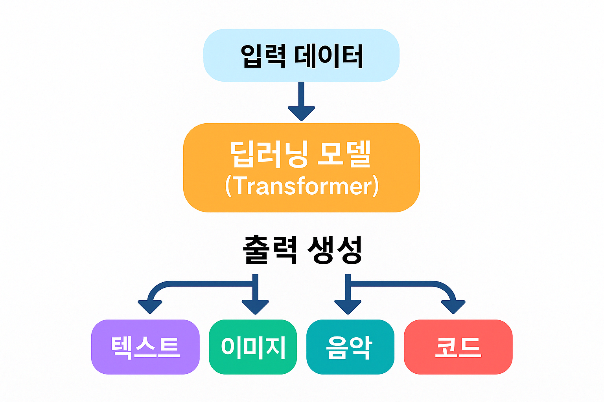

생산형 AI란?
생산형 AI(Generative AI)는 텍스트, 이미지, 음악, 코드 등 다양한 콘텐츠를 직접 생성하는 인공지능 기술입니다.
- 창의적 생산: 기존 데이터를 학습해 새로운 콘텐츠 생성 가능
- 범용성: 텍스트, 이미지, 음악, 코드 등 다양한 형태로 확장 가능
- 대규모 학습: 방대한 데이터를 기반으로 고도화된 결과 생성
- 자연어 처리 능력: 사람처럼 문장 이해 및 생성이 가능
- 협업 가능: 작문, 디자인 등 창작 도구로 사용 가능
- 빠른 생성 속도: 몇 초 만에 콘텐츠 생산
- 윤리적 쟁점: 허위정보 생성 및 저작권 문제 등 고려 필요
⚙️ 동작 방식
생산형 AI는 주로 딥러닝(Deep Learning) 기술 중 하나인
Transformer 구조를 기반으로 작동합니다.
입력된 데이터(예: 문장, 이미지 설명 등)를 이해한 후, 그에 어울리는
결과를 예측하며
단어/픽셀/노트/프레임 등을 하나씩 생성해 나갑니다.
- 텍스트: 단어 단위로 문맥을 예측해 이어지는 문장 생성
- 이미지: 설명을 바탕으로 픽셀 또는 벡터 단위로 그림 생성
- 음악: 코드와 리듬 패턴을 학습하여 새로운 곡 생성
- 코드: 사용자 요구를 파악해 함수/코드블록 생성

▲ 생산형 AI의 입력 → 딥러닝 모델 → 출력 생성 흐름도
💡 활용 예시
| 분야 | 예시 |
|---|---|
| 텍스트 생성 | ChatGPT, Claude, Gemini |
| 이미지 생성 | DALL·E, Midjourney, Stable Diffusion |
| 음악 생성 | Suno, Aiva, Jukebox |
| 코드 생성 | GitHub Copilot, CodeWhisperer |
| 영상 생성 | Sora, Runway, Pika |